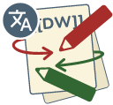
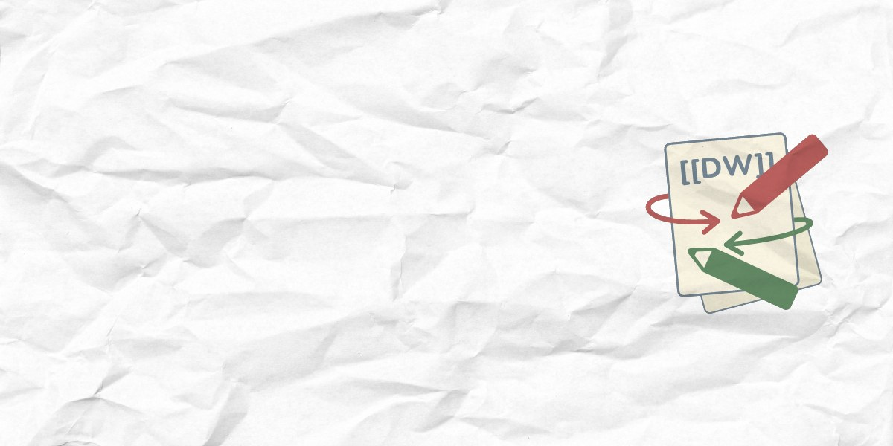

The graphics
We use the logo in some graphics, which are made for specific uses. They are built by the same build system that makes the logo, but are not necessarily made for general use.
dokuwiki-button.png
80 x 15, button in the dokuwiki template footer
dokuwiki-forum.png
241 x 54, the header of the user forum

dokuwiki-translate.png
128 x 119, icon in the translation tool
dokuwiki-88x31.png
88 x 31, classic web button

dokuwiki-patreon.jpg
1200 x 600, The banner of the Patreon page